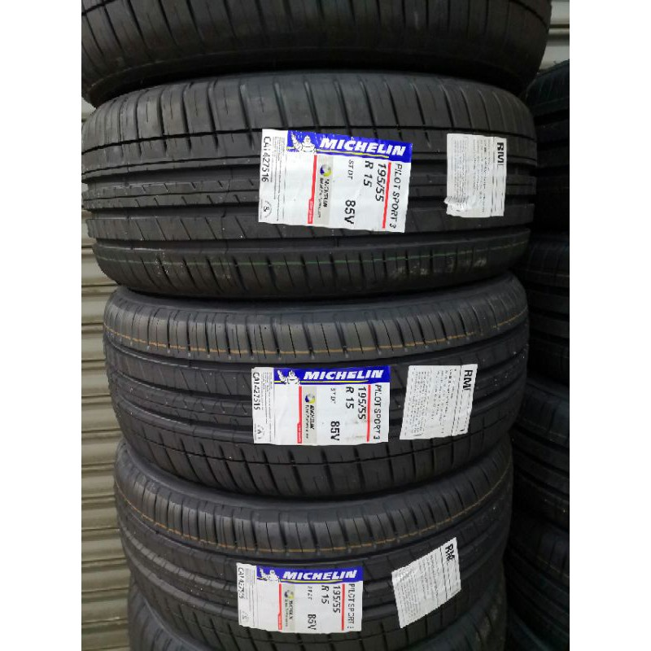

Michelin Pilot Sport 3 195/55R15

RM 315.00
The Michelin Pilot Sport 3 (PS3) is a premium Ultra-High Performance (UHP) tyre designed to deliver outstanding wet and dry grip, precise steering response and excellent cornering stability. Its advanced rubber compound and optimised tread design enhance wet braking, water evacuation and driving control while balancing fuel efficiency and tread life. Ideal for sporty daily driving and highway cruising. Key Features: • Excellent wet and dry grip • Superior wet braking performance • Precise and responsive steering • Excellent cornering stability • Enhanced aquaplaning resistance • High-speed driving stability • Long-lasting tread performance Specifications: • Size: 195/55R15 • Load & Speed Rating: 85V / 89V XL • Maximum Speed: 240 km/h • Tyre Category: Ultra-High Performance (UHP) • Tread Pattern: Asymmetric • Brand Origin: France
Klang Hock Li Tyre Services Sdn Bhd, Klang, Selangor, Malaysia.
View live product details and enquire